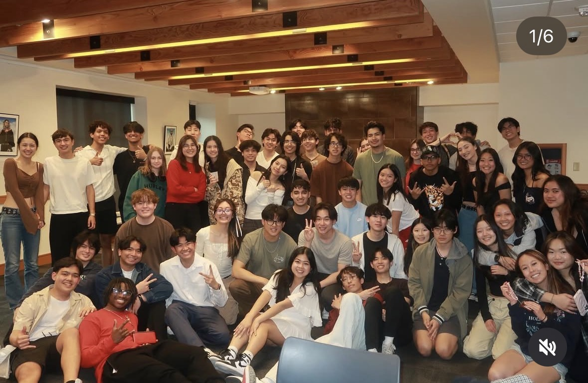
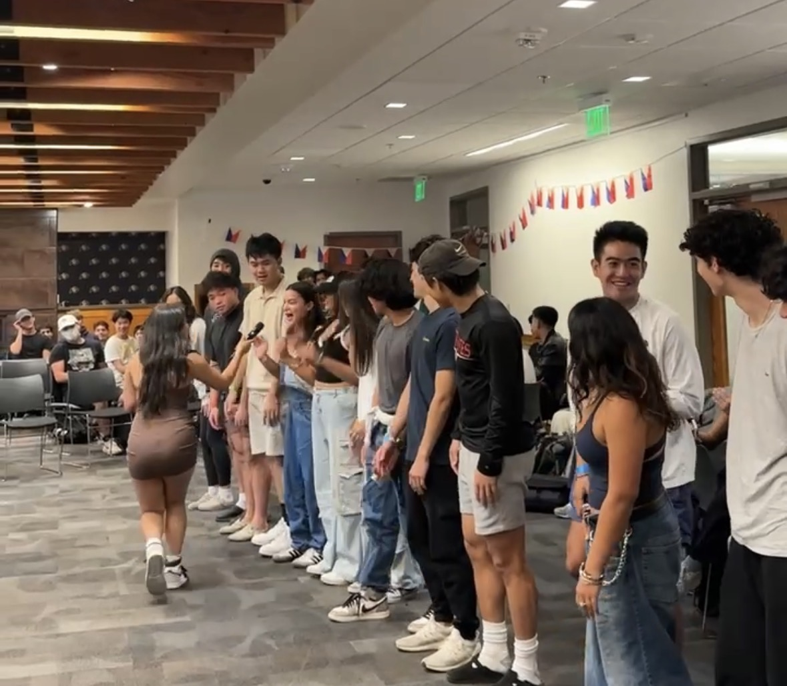
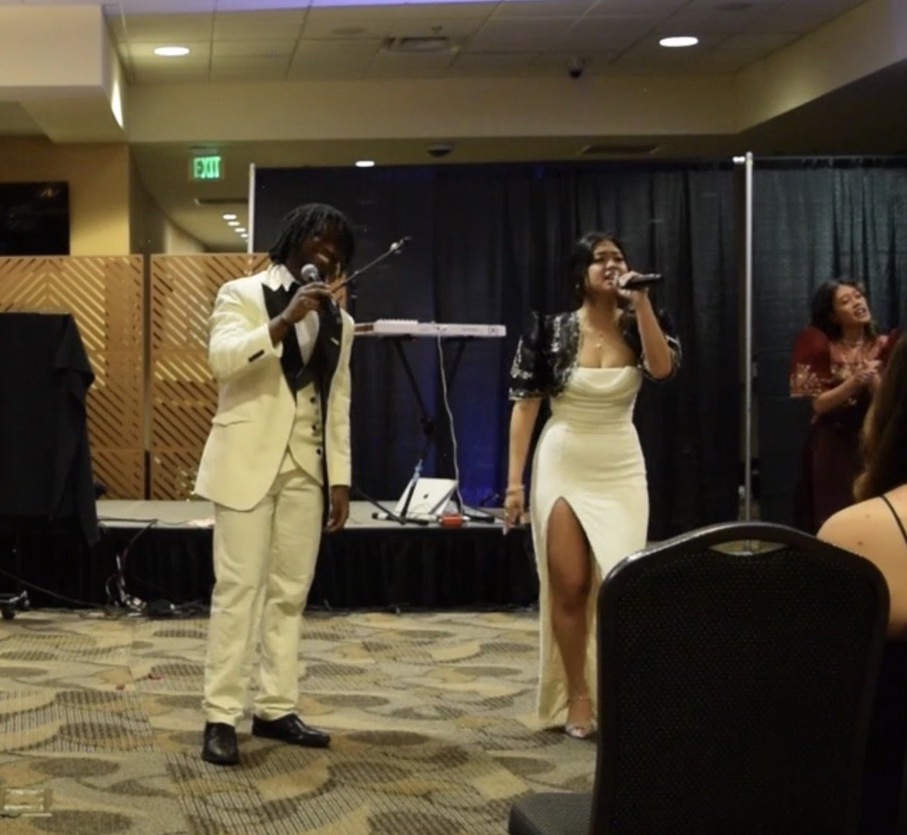
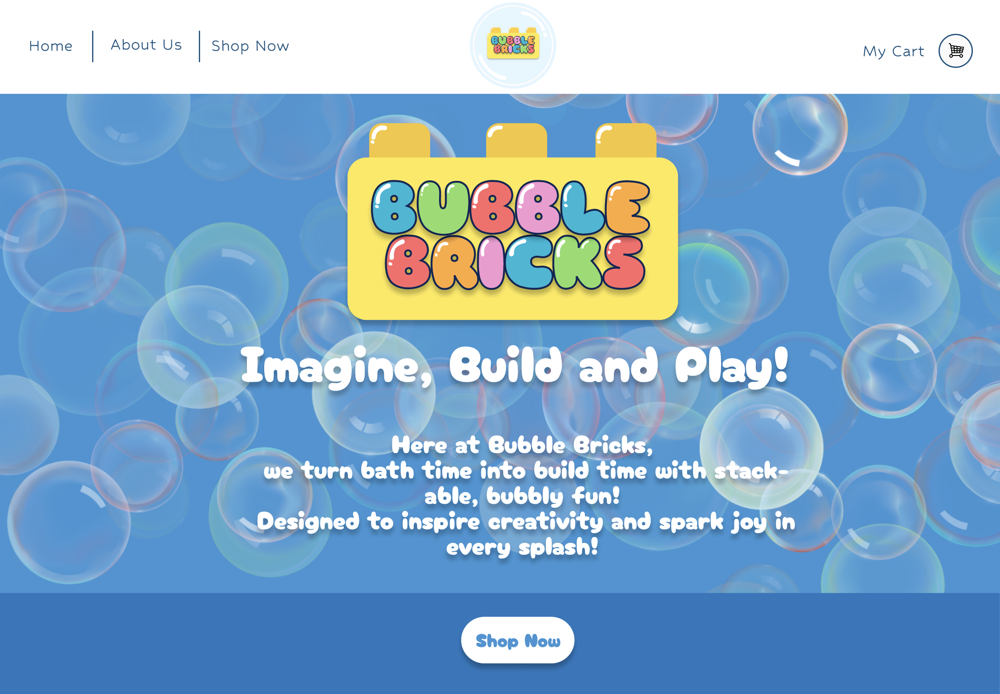

Building Community
I founded the first Filipino Student Association at CU Boulder to create a space where Filipino students and allies could connect and celebrate culture together. Building this organization allowed me to bring people together around identity, tradition, and community. Seeing that space grow into a supportive network has been one of the most meaningful parts of my college experience.

Leading Community
As the current Co-President of Asian Unity, I help lead events that bring students together to celebrate culture and community. From organizing activities to creating welcoming spaces, I enjoy helping people connect and share experiences. Leadership in this role has taught me how powerful community-building can be.

Sharing My Voice
Singing has always been one of my favorite ways to express myself. Each year, I perform at the PTA and Vietnamese Student Association culture shows, sharing music while celebrating culture and community. Performing allows me to connect with others and bring energy and joy to the spaces I'm part of.

Designing My Future
My creativity also extends into design and technology. Bubble Bricks is a personal project where I created the UI/UX for a website concept, exploring how thoughtful design and functionality shape engaging digital experiences. In the future, I hope to continue sharing my voice through designing websites and digital spaces.
View my Bubble Bricks project